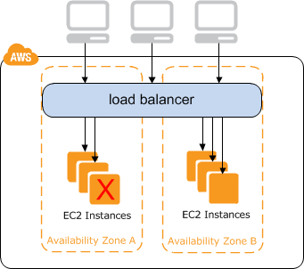

Fanatical Support® for
Amazon Web Services
Elastic Load Balancers
ELBv1 (Classic)
This is the load balancer that we all know and love.

ELBv1 Feature Highlights
- Protocols
- HTTP, HTTPS, TCP, SSL
- Sticky Sessions
- Either LB generated or Application Cookie based.
- Health Checks
- TCP, SSL, HTTP, or HTTPS with port
- Balancing Algorithm
- Balances across AZs unless Cross-zone load balancing is enabled, then balances across instances.
- Backend Authentication Available
- Certificate authentication on SSL connection.
ELBv2 (Application Load Balancer)
This is NOT the load balancer that we all know and love.


ELBv2 Feature Difference Highlights
- Protocols
- HTTP and HTTPS only
- Sticky Sessions
- Only LB generated.
- Health Checks
- HTTP(S)/port with defined response codes
- Balancing Algorithm
- Cross-zone load balancing is always enabled and balances across instances.
- Additional Features
- Path-based routing and service targets.
ELBs in CloudFormation
- ELBv1 - AWS::ElasticLoadBalancing::LoadBalancer
- All-in-one resource
- ELBv2 - AWS::ElasticLoadBalancingV2::LoadBalancer
- Simple skeleton resource that needs additional resources:
- AWS::ElasticLoadBalancingV2::Listener
- AWS::ElasticLoadBalancingV2::ListenerRule
- AWS::ElasticLoadBalancingV2::TargetGroup
ELBv1 in CloudFormation
AWS::ElasticLoadBalancing::LoadBalancer
"Properties": {
"AccessLoggingPolicy" : AccessLoggingPolicy,
"AppCookieStickinessPolicy" : [ AppCookieStickinessPolicy, ... ],
"ConnectionDrainingPolicy" : ConnectionDrainingPolicy,
"ConnectionSettings" : ConnectionSettings,
"CrossZone" : Boolean,
"HealthCheck" : HealthCheck,
"Instances" : [ String, ... ],
"LBCookieStickinessPolicy" : [ LBCookieStickinessPolicy, ... ],
"LoadBalancerName" : String,
"Listeners" : [ Listener, ... ],
"Policies" : [ ElasticLoadBalancing Policy, ... ],
"Scheme" : String,
"SecurityGroups" : [ Security Group, ... ],
"Subnets" : [ String, ... ],
"Tags" : [ Resource Tag, ... ]
}ELBv1 LoadBalancer Properties
"Properties": {
"AccessLoggingPolicy" - S3 bucket and Interval
"AppCookieStickinessPolicy" - list of AppCookieStickinessPolicy objects
"ConnectionDrainingPolicy" - Enable and Timeout
"ConnectionSettings" - Idle-Timeout
"CrossZone" - Balance across all instances regardless of AZ
- "HealthCheck" - Simple connection or HTTP(s) 200 response
"Instances" - List of Instance IDs (ASG: LoadBalancerNames)
"LBCookieStickinessPolicy" - list of LBCookieStickinessPolicy objects
* "LoadBalancerName" - Unique name
"Listeners" - Ports and Protocols
"Policies" - Backend Server Policies (Backend Authentication)
* "Scheme" - Internal or Public Facing
"SecurityGroups" - List of Security Groups
- "Subnets" - list of subnets (one per AZ)
"Tags" - list of tags like normal
}
Bold: Required, *: Replacement, -: Conditional ReplacementAmazon Documentation Link
ELBv2 in CloudFormation
AWS::ElasticLoadBalancingV2::LoadBalancer
"Properties": {
"LoadBalancerAttributes" : [ LoadBalancerAttributes, ... ],
"Name" : String,
"Scheme" : String,
"SecurityGroups" : [ String, ... ],
"Subnets" : [ String, ... ],
"Tags" : [ Resource Tag, ... ]
}ELBv2 LoadBalancer Properties
"Properties": {
"LoadBalancerAttributes" - Deletion Protection/Idle Timeout
* "Name" - Unique alphanumeric/hyphens
* "Scheme" - internet-facing/internal
"SecurityGroups" - list of ids
"Subnets" - list of two or more in different AZs
"Tags" - list of tags like normal
}
Bold: Required, *: Replacement, -: Conditional ReplacementAmazon Documentation Link
ELBv2 Additional Resources
AWS::ElasticLoadBalancingV2::Listener
"Properties": {
"Certificates" : [ Certificates, ... ],
"DefaultActions" : [ DefaultActions, ... ],
"LoadBalancerArn" : String,
"Port" : Integer,
"Protocol" : String,
"SslPolicy" : String
}ELBv2 Listener Properties
"Properties": {
"Certificates" - List of Certificates - Required if HTTPS
"DefaultActions" - TargetGroupARN and action (only "forward" valid currently)
* "LoadBalancerArn" - The Associated ELB for this listener
"Port" - The port for the listener
"Protocol" - Only HTTP or HTTPS valid currently
"SslPolicy" - Security policy that defines ciphers and protocols
}
Bold: Required, *: Replacement, -: Conditional ReplacementAmazon Documentation Link
ELBv2 Additional Resources
AWS::ElasticLoadBalancingV2::ListenerRule
"Properties": {
"Actions" : [ Actions, ... ],
"Conditions" : [ Conditions, ... ],
"ListenerArn" : String,
"Priority" : Integer
}ELBv2 ListenerRule Properties
"Properties": {
"Actions" - TargetGroupARN and action (only "forward" valid currently)
"Conditions" - Field/Value: path-pattern/URL
* "ListenerArn" - ELBv2 Listener ARN association
"Priority" - Integer (1-99999, unique within rule, lower value -> higher priority)
}
Bold: Required, *: Replacement, -: Conditional ReplacementAmazon Documentation Link
ELBv2 Additional Resources
AWS::ElasticLoadBalancingV2::TargetGroup
"Properties": {
"HealthCheckIntervalSeconds" : Integer,
"HealthCheckPath" : String,
"HealthCheckPort" : String,
"HealthCheckProtocol" : String,
"HealthCheckTimeoutSeconds" : Integer,
"HealthyThresholdCount" : Integer,
"Matcher" : Matcher,
"Name" : String,
"Port" : Integer,
"Protocol" : String,
"Tags" : [ Resource Tag, ... ],
"TargetGroupAttributes" : [ TargetGroupAttributes, ... ],
"TargetGroupFullName" : String,
"Targets" : [ TargetDescription, ... ],
"UnhealthyThresholdCount" : Integer,
"VpcId" : String
}ELBv2 TargetGroup Properties
"Properties": {
"HealthCheckIntervalSeconds" - Integer,
"HealthCheckPath" - String,
"HealthCheckPort" - String,
"HealthCheckProtocol" - String,
"HealthCheckTimeoutSeconds" - Integer,
"HealthyThresholdCount" - Integer,
"Matcher" - Valid return codes
* "Name" - Should be less than 22 characters
* "Port" - Port of target
* "Protocol" - Protocal for target
"Tags" - Normal Resource Tag
"TargetGroupAttributes" - draining time/stickyness definition
"TargetGroupFullName" - String
"Targets" - TargetId/port (ASG: TargetGroupARNs)
"UnhealthyThresholdCount" - Number of failed checks
* "VpcId" - VPCId containing the targets
}
Bold: Required, *: Replacement, -: Conditional ReplacementAmazon Documentation Link
Load Balancer Headaches
- No SNI
- SSL Termination
- Health Checks
- CloudFront w/ SSL
No SNI
The way to resolve this in AWS is to use AWS Certificate Manager (ACM) to provision free certificates covering the needed domain names [1] or import a multi-domain certificate into IAM.
Or you can go "cloudy" and provision separate, smaller environments per domain.
[1] AWS Certificate Manager LimitsSSL Termination
- HTTPS:443 -> HTTP:80
- This would be the standard. The backend needs to be able to recognize the X-Forwarded-Proto header and act on that rather than the actual connection protocol.
- HTTPS:443 -> HTTP:443
- Needs two SSL handshakes and certificates.
(ELBv1 only) Can do authenticated backend connection. - TCP:443 -> TCP:443
- (ELBv1 only) Straight pass-through of the connection.
Health Checks
- ELBv1 - TCP
- Simple connection check.
- ELBv1 - HTTP(S)
- Requires response code of 200.
- TargetGroup (ELBv2) - HTTP(S)
- Configurable response codes in the range 200-399.
ELBv1 Health Check Troubleshooting
Target Group Health Checks
Cloudfront with SSL
If HTTPS is used between Cloudfront and the ELB, the SSL certificate on the ELB needs to cover the origin domain name or, if the host header is forwarded through Cloudfront, the original request's domain.
AWS Documentation LinkCommon Scenarios
- Magento - ELBv1
- Magento - ELBv2
- Wordpress
- CloudFront w/ SSL
Magento - ELBv1
The way to resolve this in AWS is to use AWS Certificate Manager (ACM) to provision free certificates covering the needed domain names [1] or import a multi-domain certificate into IAM.
Or you can go "cloudy" and provision separate, smaller environments per domain.
[1] AWS Certificate Manager LimitsMagento - ELBv2
- HTTPS:443 -> HTTP:80
- This would be the standard. The backend needs to be able to recognize the X-Forwarded-Proto header and act on that rather than the actual connection protocol.
- HTTPS:443 -> HTTP:443
- Needs two SSL handshakes and certificates.
(ELBv1 only) Can do authenticated backend connection. - TCP:443 -> TCP:443
- (ELBv1 only) Straight pass-through of the connection.
Wordpress
- ELBv1 - TCP
- Simple connection check.
- ELBv1 - HTTP(S)
- Requires response code of 200.
- TargetGroup (ELBv2) - HTTP(S)
- Configurable response codes in the range 200-399.
ELBv1 Health Check Troubleshooting
Target Group Health Checks
Cloudfront with SSL
If HTTPS is used between Cloudfront and the ELB, the SSL certificate on the ELB needs to cover the origin domain name or, if the host header is forwarded through Cloudfront, the original request's domain.
AWS Documentation LinkComments or Questions?
References
Load Balancing Overview
ELBv1 Documentation
ELBv2 Documentation